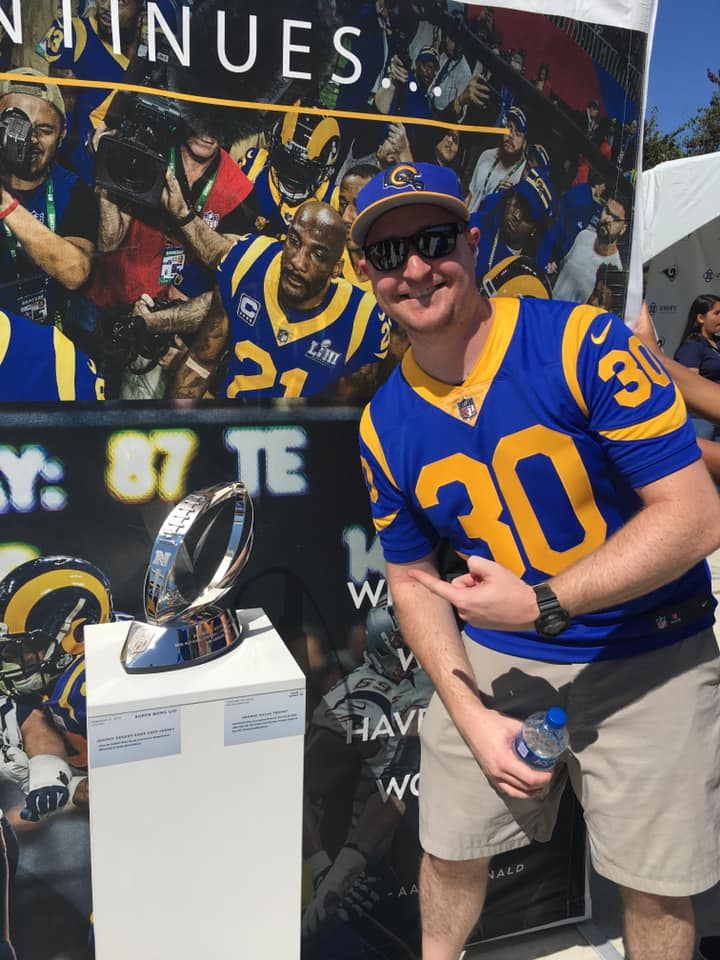

About Me
A long time EMT/Paramedic turned coder. Hayden is a motivated young man looking to add to his skill set and explore new career opportunities.
After over a decade of treating the wounded and suffering, a more stable work environment that caters to imagination, creation, learning and exploration has become the end goal.
Having always known he want's to serve the public a job in web development seems like a great place to be able to reach the most amount of people in one lifetime.
Southern California born and bred, Hayden enjoys hiking and backpacking through the wilderness, playing his guitars or videogames as well as watching his favorite sports teams with his family and friends.